{kind=link}
| Picture | Common Name | Scientific Name | Family | Last Seen | Comments |
|---|---|---|---|---|---|
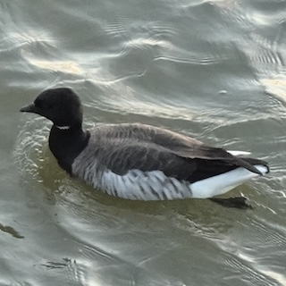 |
Brant 黑雁 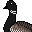 |
branta bernicla | Waterfowl | June ’25, Malibu CA | can be identified by white neckline |
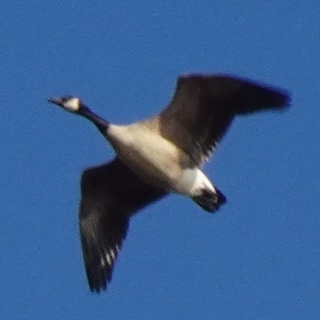 |
Canada Goose 加拿大雁 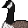 |
branta canadensis | Waterfowl | Mar ’26, West Lafayette IN | countless of them in blackwater NWR in January |
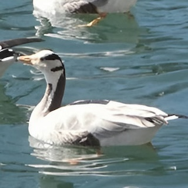 |
Bar-headed Goose 斑头雁 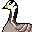 |
anser indicus | Waterfowl | Dec ’19, Lhasa Tibet | Seen with ruddy shelduck in the pond behind Potala palace |
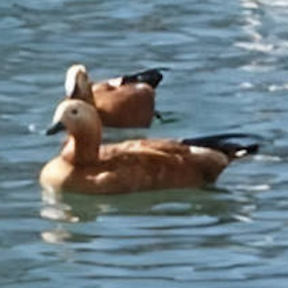 |
Ruddy Shelduck 赤麻鸭 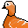 |
tadorna ferruginea | Waterfowl | Dec ’19, Lhasa Tibet | NA |
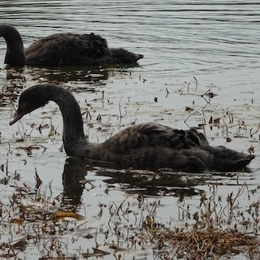 |
Black Swan 黑天鹅 | cygnus atratus | Waterfowl | Feb ’23, Suzhou Jiangsu | juvenile + escaped species |
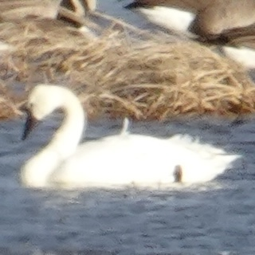 |
Tundra Swan 小天鹅 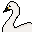 |
cygnus columbianus | Waterfowl | Jan ’25, Cambridge MD | small part of yellow on bills |
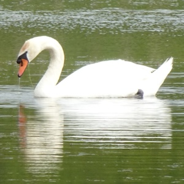 |
Mute Swan 疣鼻天鹅 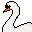 |
cygnus olor | Waterfowl | May ’26, Porter IN | NA |
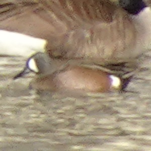 |
Blue-Winged Teal 蓝翅鸭 | spatula discors | Waterfowl | Mar ’26, West Lafayette IN | NA |
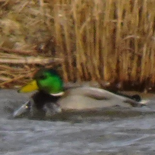 |
Mallard 绿头鸭 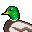 |
anas platyrhynchos | Waterfowl | Mar ’26, West Lafayette IN | sometimes mixed with domestic ducks |
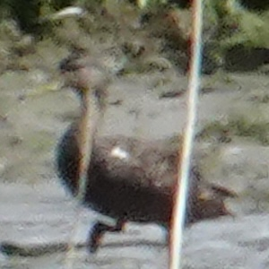 |
American Black Duck 北美黑鸭 | anas rubripes | Waterfowl | May ’26, Newark NJ | NA |
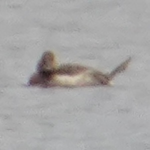 |
Northern Pintail 针尾鸭 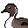 |
anas acuta | Waterfowl | Mar ’26, West Lafayette IN | NA |
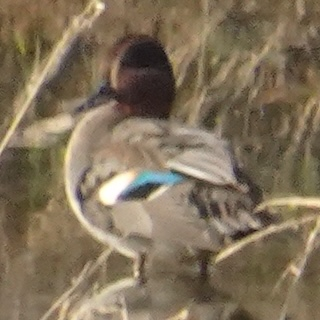 |
Green-Winged Teal 绿翅鸭 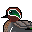 |
anas crecca | Waterfowl | Dec ’25, Suzhou Jiangsu | small duck, standing alone in the paddy fields |
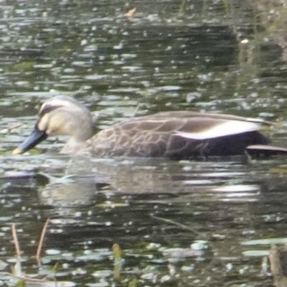 |
Eastern Spot-billed Duck 斑嘴鸭 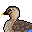 |
anas zonorhyncha | Waterfowl | Jan ’26, Suzhou Jiangsu | most common duck in Suzhou |
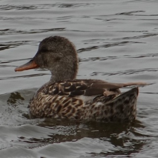 |
Gadwall 赤膀鸭 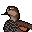 |
mareca strepera | Waterfowl | June ’25, Malibu CA | NA |
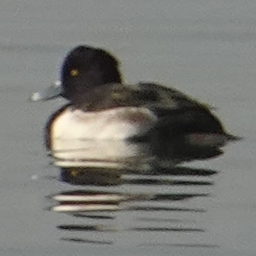 |
Tufted Duck 凤头潜鸭 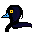 |
aythya fuligula | Waterfowl | Dec ’25, Suzhou Jiangsu | NA |
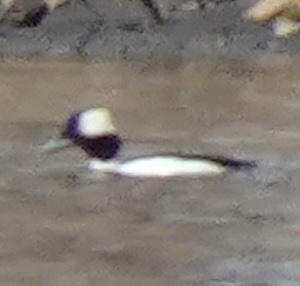 |
Bufflehead 白枕鹊鸭 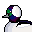 |
bucephala albeola | Waterfowl | Mar ’26, West Lafayette IN | diving like dolphins |
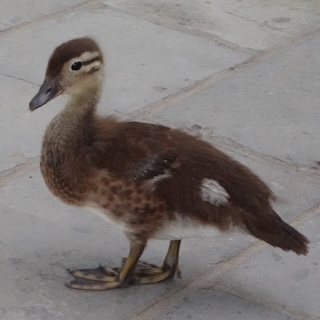 |
Mandarin Duck 鸳鸯 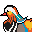 |
aix galericulata | Waterfowl | July ’25, Beijing | juvenile, identified by dotted webbings |
 |
Wood Duck 林鸳鸯 | aix sponsa | Waterfowl | Aug ’26, West Lafayette IN | ducks & ducklings |
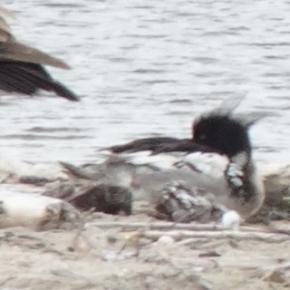 |
Red-breasted Merganser 红胸秋沙鸭 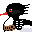 |
mergus serrator | Waterfowl | June ’25, Malibu CA | NA |
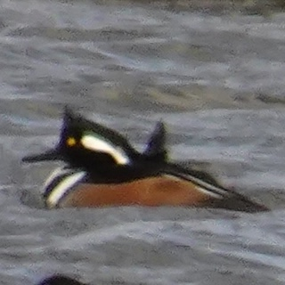 |
Hooded Merganser 棕胁秋沙鸭 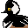 |
lophydytes cucullatus | Waterfowl | Jan ’25, Cambridge MD | go around in couples |
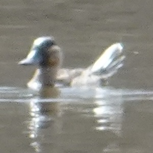 |
Ruddy Duck 棕硬尾鸭 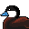 |
oxyura jamaicensis | Waterfowl | Mar ’26, West Lafayette IN | can be easily identified by tail shape |
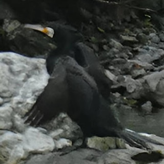 |
Great Cormorant 普通鸬鹚 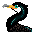 |
phalacrocorax carbo | Cormorants and Anhingas | Dec ’25, Suzhou Jiangsu | NA |
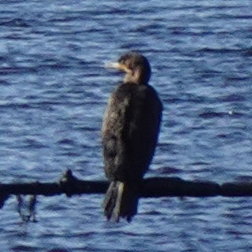 |
Double-crested Cormorant 角鸬鹚 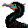 |
nannopterum auritum | Cormorants and Anhingas | May ’26, Newark NJ | flying across inner harbor |
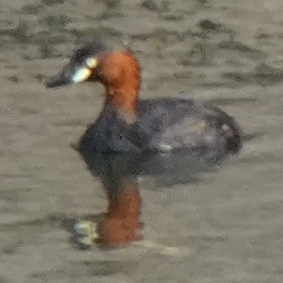 |
Little Grebe 小䴙䴘 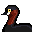 |
tachybaptus ruficollis | Grebes | Dec ’25, Suzhou Jiangsu | called ‘little PT’ in Chinese birding community - too hard to write |
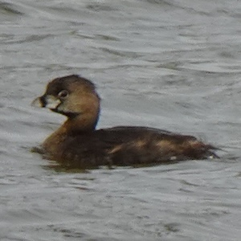 |
Pie-billed Grebe 斑嘴巨䴙䴘 | podilymbus podiceps | Grebes | Mar ’26, West Lafayette IN | calm cutie |
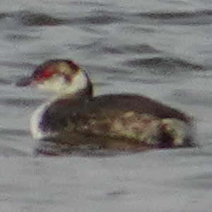 |
Horned Grebe 角䴙䴘 | podiceps auritus | Grebes | Mar ’26, West Lafayette IN | red eye. grebe, why are you so cool? |
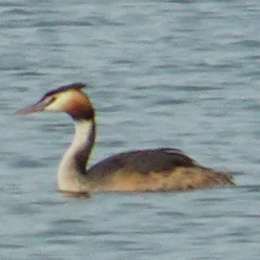 |
Great Crested Grebe 凤头䴙䴘 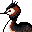 |
podiceps cristatus | Grebes | Dec ’25, Suzhou Jiangsu | NA |
| na | Tufted Puffin 花魁鸟 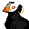 |
fratercula cirrhata | Alcids | July ’24, Cannon Beach OR | NA |
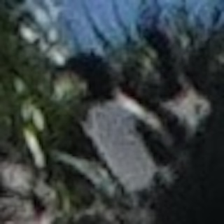 |
Common Murre 崖海鸦 | uria aalge | Alcids | July ’24, Cannon Beach OR | NA |
| American White Pelican 美洲白鹈鹕 | pelecanus erythrorhynchos | Pelicans | Mar ’26, West Lafayette IN | FINALLY. Elegant and huge white birds. | |
| Brown Pelican 褐鹈鹕 | pelecanus occidentalis | Pelicans | June ’25, Malibu CA | NA | |
| Laughing Gull 笑鸥 | leucophaeus atricilla | Gulls, Terns, Skimmers | May ’26, Newark NJ | NA | |
| Bonaparte’s Gull 博氏鸥 | chroicocephalus philadelphia | Gulls, Terns, Skimmers | Mar ’26, West Lafayette IN | winter coat | |
| Black-headed Gull 红嘴鸥 | chroicocephalus ridibundus | Gulls, Terns, Skimmers | Dec ’25, Suzhou Jiangsu | winter coat. Many flew to Taihu Lake (Wuxi, Suzhou) recently | |
| Vega Gull 蒙古银鸥 | larus mongolicus | Gulls, Terns, Skimmers | Dec ’25, Suzhou Jiangsu | winter coat | |
| Yellow-legged Gull 黄腿银鸥 | larus michahellis | Gulls, Terns, Skimmers | July ’16, Venice Italy | NA | |
| American Herring Gull 美洲银鸥 | larus smithsonianus | Gulls, Terns, Skimmers | Jan ’24, New York NY | winter coat | |
| Black-tailed Gull 黑尾鸥 | larus crassirostris | Gulls, Terns, Skimmers | July ’25, Yantai Shandong | the only gull that stays in Jiaodong Penninsula in summer | |
| Ring-billed Gull 环嘴鸥 | larus delawarensis | Gulls, Terns, Skimmers | May ’26, Newark NJ | NA | |
| California Gull 加州鸥 | larus californicus | Gulls, Terns, Skimmers | July ’24, Cannon Beach OR | NA | |
| Western Gull 西美鸥 | larus occidentals | Gulls, Terns, Skimmers | June ’25, Santa Monica CA | dark grey back | |
| Glaucous-winged Gull 灰翅鸥 | larus glaucescens | Gulls, Terns, Skimmers | July ’24, Seattle WA | juveniles were seen eating a starfish - sadly they failed. | |
| Least Tern 普通燕鸥 | sternula antillarum | Gulls, Terns, Skimmers | Apr ’25, Cambridge MD | fall straight from the sky to catch fishes | |
| Caspian Tern 红嘴巨燕鸥 | hydroprogne caspia | Gulls, Terns, Skimmers | June ’26, Chicago IL | NA | |
| Whiskered Tern 须浮鸥 | chlidonias hybrida | Gulls, Terns, Skimmers | July ’25, Linyi Shandong | does not have forked tail | |
| Black-winged Stilt 黑翅长脚鹬 | himantopus himantopus | Shorebirds | Dec ’25, Suzhou Jiangsu | look like red-legged mosquitoes… | |
| Killdeer 双领鸻 | charadrius vociferus | Shorebirds | June ’26, Chicago IL | didn’t know they can also live in land | |
| Semipalmated Plover 半蹼鸻 | charadrius semipalmatus | Shorebirds | Apr ’25, Cambridge MD | NA | |
| Lapwing 凤头麦鸡 | vanellus vanellus | Shorebirds | Dec ’25, Suzhou Jiangsu | only see them flying. They have beautiful iridescent feathers | |
| Pheasant-tailed Jacana 水雉 | hydrophasianus chirurgus | Shorebirds | July ’25, Suzhou Jiangsu | dubbed ‘fairy on the waves’ | |
| Common Snipe 扇尾沙锥 | gallinago gallinago | Shorebirds | Dec ’25, Suzhou Jiangsu | like to stand closely to the ridges to hide, very shy | |
| Wilson’s Snipe 美洲沙锥 | gallinago delicata | Shorebirds | Jan ’25, Cambridge MD | run very fast when exposed | |
 |
Spotted Sandpiper 斑腹矶鹬 | actitis macularius | Shorebirds | Aug ’26, West Lafayette IN | very small shorebird, has a pointy beak |
| Marsh Sandpiper 泽鹬 | tringa stagnatilis | Shorebirds | Dec ’25, Suzhou Jiangsu | NA | |
| Spotted Redshank 鹤鹬 | tringa erythropus | Shorebirds | Dec ’25, Suzhou Jiangsu | NA | |
| Greater Yellowlegs 大黄脚鹬 | tringa melanoleuca | Shorebirds | Oct ’25, West Lafayette IN | almost the size of a mallard | |
| Lesser Yellowlegs 小黄脚鹬 | tringa flavipes | Shorebirds | Apr ’25, Cambridge MD | long bill and long legs | |
| Dunlin 黑腹滨鹬 | calidris alpina | Shorebirds | Apr ’25, Cambridge MD | medium sized shorebird with a distinguishable black belly when breeding | |
| Least Sandpiper 美洲小滨鹬 | calidris minutilla | Shorebirds | Apr ’25, Cambridge MD | very small, appear in flocks | |
| Sandhill Crane 沙丘鹤 | antigone canadensis | Cranes | Nov ’25, Pulaski IN | loud!!!! | |
| Black-Crowned Night Heron 夜鹭 | nycticorax nycticorax | Herons, Ibis, and allies | Dec ’25, Suzhou Jiangsu | countless near Suzhou River | |
 |
Green Heron 美洲绿鹭 | butorides virescens | Herons, Ibis, and allies | Aug ’26, West Lafayette IN | hiding in reeds, small, high-pitch song |
| Gray Heron 苍鹭 | ardea cinerea | Herons, Ibis, and allies | Dec ’25, Suzhou Jiangsu | NA | |
| Great Blue Heron 大蓝鹭 | ardea herodias | Herons, Ibis, and allies | Mar ’26, West Lafayette IN | kinda everywhere | |
| Snowy Egret 雪鹭 | egretta thula | Herons, Ibis, and allies | June ’25, Malibu CA | catching fish in the waves | |
| Little Egret 白鹭 | egretta garzetta | Herons, Ibis, and allies | Dec ’25, Suzhou Jiangsu | NA | |
| Great Egret 大白鹭 | ardea alba | Herons, Ibis, and allies | Mar ’26, West Lafayette IN | NA | |
| na | Eastern Cattle Egret 牛背鹭 | ardea coromanda | Herons, Ibis, and allies | June ’25, Suzhou Jiangsu | NA |
| Eurasian Moorhen 黑水鸡 | gallinula chloropus | Rails, Gallinules, and allies | Dec ’25, Suzhou Jiangsu | symbol of DKU community! | |
| Eurasian Coot 骨顶鸡 | fulica atra | Rails, Gallinules, and allies | Dec ’25, Suzhou Jiangsu | NA | |
| na | American Coot 美洲骨顶 | fulica americana | Rails, Gallinules, and allies | Apr ’25, West Lafayette IN | NA |
| White-breasted Waterhen 白胸苦恶鸟 | amaurornis phoenicurus | Rails, Gallinules, and allies | Jan ’26, Suzhou Jiangsu | suprisingly small, cutie pie with long, long toes | |
| Turkey 火鸡 | meleagris gallopavo | Grouse, Quail, and Allies | May ’25, New York NY | Named ‘Roosey’ | |
| Rock Pigeon 岩鸽 | columbia livia | Pigeons and Doves | Oct ’24, Baltimore MD | NYC pigeons are horribly fat | |
| Spotted Dove 珠颈斑鸠 | spilopelia chinensis | Pigeons and Doves | Dec ’25, Suzhou Jiangsu | dubbed ‘the most delicious friend of hawks’ | |
| Oriental Turtle-Dove 山斑鸠 | streptopelia orientalis | Pigeons and Doves | Feb ’23, Suzhou Jiangsu | bronze feathers compared to spotted dove | |
| Eurasian Collared-Dove 灰斑鸠 | streptopelia decaocto | Pigeons and Doves | Jan ’26, Suzhou Jiangsu | large and pale | |
| Mourning Dove 哀鸽 | zenaida macroura | Pigeons and Doves | Mar ’26, West Lafayette IN | cute, pink iridescent feathers, owl-like calls | |
| Turkey Vulture 红头美洲鹫 | cathartes aura | Vultures, Hawks, and Allies | Mar ’26, West Lafayette IN | if you go on a road trip they are always there | |
| Osprey 鱼鹰 | pandion haliaetus | Vultures, Hawks, and Allies | Apr ’25, Cambridge MD | somehow chasing a seagull | |
| Cooper’s Hawk 库柏鹰 | accipiter cooperii | Vultures, Hawks, and Allies | Mar ’26, West Lafayette IN | small cutie, behave like a chicken | |
| Bald Eagle 白头海雕 | haliaeetus leucocephalus | Vultures, Hawks, and Allies | Mar ’26, West Lafayette IN | can be differentiated from turkey vulture while flying by their white tails | |
| Red-shouldered Hawk 红肩𫛭 | buteo lineatus | Vultures, Hawks, and Allies | Mar ’26, West Lafayette IN | compared to red-tailed hawks, more likely to be seen near water | |
| Red-tailed Hawk 红尾𫛭 | buteo jamaicensis | Vultures, Hawks, and Allies | Aug ’25, Indianapolis IN | NA | |
| Eurasian Hobby 燕隼 | falco subbuteo | Flacons | July ’25, Beijing | NA | |
| Peregrine Falcon 游隼 | falco peregrinus | Flacons | June ’26, Lafayette IN | saw a baby calling for food on top of a building near Lafayette city hall | |
| Common Nighthawk 小美洲夜鹰 | chordeiles minor | Nightjars | May ’26, West Lafayette IN | white patches on wings from below | |
| na | Chimney Swift 烟囱雨燕 | chaetura pelagica | Swifts | May ’26, West Lafayette IN | NA |
| Common Swift 普通雨燕 | apus apus | Swifts | July ’25, Beijing | THE famous birds at Beijing Central Axis | |
| Tree Swallow 双色树燕 | tachycineta bicolor | Martins and Swallows | Mar ’26, West Lafayette IN | small, bright blue under sunlight, white belly | |
| na | Purple Martin 紫崖燕 | progne subis | Martins and Swallows | Aug ’26, West Lafayette IN | large, dark swallow |
| Barn Swallow 家燕 | hirundo rustica | Martins and Swallows | May ’26, West Lafayette IN | longer tail | |
| Northern Rough-winged Swallow 中北美毛翅燕 | stelgidopteryx serripennis | Martins and Swallows | June ’26, Chicago IL | small, fly very fast, chasing insects near water | |
| Eurasian Crag-Martin 岩燕 | ptyonoprogne rupestris | Martins and Swallows | June ’23, Datong Shanxi | NA | |
| Red-rumped Swallow 金腰燕 | cecropis daurica | Martins and Swallows | July ’25, Suzhou Jiangsu | NA | |
| Cliff Swallow 美洲燕 | petrochelidon pyrrhonota | Martins and Swallows | June ’26, Lafayette IN | seen near Wabash bridge, looks like barn swallow but has a fish-like silver underpart | |
| na | Common Cuckoo 大杜鹃 | cuculus canorus | Cuckoos | July ’25, Beijing | singing Cuckoo endlessly. Chinese people refer it as 布谷 which literally translate as ‘sowing seeds’ |
| Common Kingfisher 普通翠鸟 | alcedo atthis | Kingfishers | Dec ’25, Suzhou Jiangsu | very shy | |
 |
Belted Kingfisher 白腹鱼狗 | megaceryle alcyon | Kingfishers | Aug ’26, West Lafayette IN | suprisingly large |
| Eurasian Hoopoe 戴胜 | upupa epops | Hoopoes | Apr ’23, Suzhou Jiangsu | NA | |
| Yellow-bellied Sapsucker 黄腹吸汁啄木鸟 | sphyrapicus varius | Woodpeckers | Mar ’25, Baltimore MD | dead due to bird strike | |
| Red-bellied Woodpecker 红腹啄木鸟 | melanerpes carolinus | Woodpeckers | Mar ’26, West Lafayette IN | NA | |
| Grey-headed Woodpecker 灰头绿啄木鸟 | picus canus | Woodpeckers | July ’25, Beijing | NA | |
| Downy Woodpecker 绒啄木鸟 | dryobates pubescens | Woodpeckers | May ’26, West Lafayette IN | very small | |
| Hairy Woodpecker 毛啄木鸟 | leuconotopicus villosus | Woodpeckers | May ’26, West Lafayette IN | NA | |
| Northern Flicker 北扑翅䴕 | colaptes auratus | Woodpeckers | May ’26, West Lafayette IN | dark grey patch on chest | |
| Pileated Woodpecker 北美黑啄木鸟 | dryocopus pileatus | Woodpeckers | Nov ’25, West Lafayette IN | strikingly big | |
| Blue Jay 冠蓝鸦 | cyanocitta cristata | Jays, Magpies, Crows, Ravens | Mar ’26, West Lafayette IN | only heard them singing. never seen with eyes | |
| Red-billed Blue-Magpie 红嘴蓝鹊 | urocissa erythroryncha | Jays, Magpies, Crows, Ravens | Mar ’23, Lijiang Yunnan | NA | |
| Azure-winged Magpie 灰喜鹊 | cyanopica cyanus | Jays, Magpies, Crows, Ravens | July ’25, Suzhou Jiangsu | Very common in northern China, esp. Shandong, Beijing | |
| Oriental Magpie 喜鹊 | pica serica | Jays, Magpies, Crows, Ravens | Dec ’25, Suzhou Jiangsu | same as above | |
| American Crow 短嘴鸦 | corvus brachyrhynchos | Jays, Magpies, Crows, Ravens | Jan ’25, Baltimore MD | NA | |
| Fish Crow 鱼鸦 | corvus ossifragus | Jays, Magpies, Crows, Ravens | Apr ’25, Baltimore MD | song is a reluctant ‘uh-uh’. sits on trees of Baltimore in flocks in evenings, esp. from Nov to Feb | |
| Large-billed Crow 大嘴乌鸦 | corvus macrohynchos | Jays, Magpies, Crows, Ravens | Mar ’23, Lijiang Yunnan | NA | |
| Carrion Crow 小嘴乌鸦 | corvus corone | Jays, Magpies, Crows, Ravens | July ’25, Beijing | most common crow in Beijing city | |
| Common Raven 渡鸦 | corvus corax | Jays, Magpies, Crows, Ravens | June ’25, Malibu CA | ‘quoth the raven, nevermore’ - quoth someone who died in Baltimore. | |
| Eastern Wood-Pewee 东部木鹟 | contopus virens | Tyrant Flycatchers: Pewees, Kingbirds, and Allies | May ’26, West Lafayette IN | its call is ‘pewee’. I think birds are like pokemons | |
| Black Phoebe 黑长尾霸鹟 | sayornis nigricans | Tyrant Flycatchers: Pewees, Kingbirds, and Allies | June ’25, Malibu CA | NA | |
| Eastern Phoebe 东菲比霸鹟 | sayornis phoebe | Tyrant Flycatchers: Pewees, Kingbirds, and Allies | May ’26, West Lafayette IN | slightly yellow on sides | |
| Great Crested Flycatcher 大冠蝇霸鹟 | myiachus crinitus | Tyrant Flycatchers: Pewees, Kingbirds, and Allies | May ’26, Porter IN | NA | |
| Oriental Magpie-Robin 鹊鸲 | copsychus saularis | Old World Flycathers | Dec ’25, Suzhou Jiangsu | very common in Eastern China, sings beautifully | |
| Verditer Flycatcher 铜蓝鹟 | eumyias thalassinus | Old World Flycathers | Jan ’26, Suzhou Jiangsu | not common in Suzhou, but I saw it | |
| Daurian Redstart 北红尾鸲 | phoenicurus auroreus | Old World Flycathers | Dec ’25, Suzhou Jiangsu | cute orange bird | |
| Long-tailed Shrike 棕背伯劳 | lanius schach | Shrikes | Dec ’25, Suzhou Jiangsu | ‘butcher bird’ - in me the tiger sniffs the plum blossoms | |
| Gray Catbird 灰猫嘲鸫 | dumetella carolinensis | Catbirds, Mockingbirds, and Thrashers | May ’26, West Lafayette IN | little gray bird, usually seen in summer evening | |
| Brown Thrasher 褐矢嘲鸫 | toxostoma rufum | Catbirds, Mockingbirds, and Thrashers | Mar ’26, West Lafayette IN | NA | |
| Northern Mockingbird 北嘲鸫 | mimus polyglottos | Catbirds, Mockingbirds, and Thrashers | Apr ’25, Cambridge MD | NA | |
| Eastern Bluebird 东蓝鸲 | sialia sialis | Thrushes | May ’26, West Lafayette IN | NA | |
| Western Bluebird 西蓝鸲 | sialia mexicana | Thrushes | June ’25, Los Angeles CA | NA | |
| Hermit Thrush 隐夜鸫 | catharus guttatus | Thrushes | Jan ’25, Cambridge MD | NA | |
| Wood Thrush 棕林鸫 | hylocichla mustelina | Thrushes | May ’26, Chicago IL | bird strike in Chi town | |
| American Robin 旅鸫 | turdus migratorius | Thrushes | Mar ’26, West Lafayette IN | appear in large flocks, arrive in early spring, have a beautiful song | |
| Chinese Blackbird 乌鸫 | turdus mandarinus | Thrushes | Dec ’25, Suzhou Jiangsu | black version robin, so cute!! Eats earthworm after rain | |
| Dusky Thrush 斑鸫 | turdus eunomus | Thrushes | Dec ’25, Suzhou Jiangsu | NA | |
| Pale Thrush 白腹鸫 | turdus pallidus | Thrushes | Jan ’26, Suzhou Jiangsu | NA | |
| Cedar Waxwing 雪松太平鸟 | bombycilla cedrorum | Waxwings | May ’26, West Lafayette IN | beautiful bird, song sounds like a mosquito | |
| Light-vented Bulbul 白头鹎 | pycnonotus sinensis | Bulbuls | Dec ’25, Suzhou Jiangsu | very distinguishable singing pattern | |
| White-browed Laughingthrush 白颊噪鹛 | pterohinus sannio | Laughingthrushes and allies | July ’20, Chengdu Sichuan | NA | |
| Vinous-Throated Parrotbill 棕头鸦雀 | suthora webbiana | Parrotbills | July ’25, Beijing | small & cute | |
| Silver-throated Tit 银喉长尾山雀 | aegithalos glaucogularis | Long-tailed Tits and Bushtits | Jan ’26, Suzhou Jiangsu | very, very small | |
| Carolina Chickadee 卡罗莱纳山雀 | poecile carolinensis | Tits, Chickadees, and Titmice | May ’26, West Lafayette IN | NA | |
| Tufted Titmouse 美洲凤头山雀 | baeolophus bicolor | Tits, Chickadees, and Titmice | Oct ’25, West Lafayette IN | small round fluffy ball | |
| White-breasted Nuthatch 白胸䴓 | sitta carolinensis | Nuthatches | May ’26, West Lafayette IN | NA | |
| Brown Creeper 美洲旋木雀 | certhia americana | Treecreepers | Mar ’26, West Lafayette IN | of the size of a nuthatch but goes upwards, has a bent bill | |
| Northern House Wren 家鹪鹩 | troglodytes aedon | Wrens | May ’26, West Lafayette IN | NA | |
| Carolina Wren 卡罗苇鹪鹩 | thryothorus ludovicianus | Wrens | May ’26, West Lafayette IN | NA | |
| Oriental Reed Warbler 东方大苇莺 | acrocephalus orientalis | Warblers | July ’25, Beijing | have a noisy song | |
| Blue-gray Gnatcatcher 灰蓝蚋莺 | polioptila caerulea | Gnatcatchers | May ’26, West Lafayette IN | have a distinguishable song | |
| Ruby-crowned Kinglet 红冠戴菊 | corthylio calendula | Kinglets | Mar ’22, Durham NC | NA | |
| Eastern Warbling Vireo 歌莺雀 | vireo gilvus | Vireos | May ’26, West Lafayette IN | can be very loud | |
| Red-eyed Vireo 红眼莺雀 | vireo olivaceus | Vireos | May ’26, Porter IN | NA | |
| na | White-eyed Vireo 白眼莺雀 | vireo griseus | Vireos | June ’26, West Lafayette IN | only heard it singing |
| Ovenbird 灯顶灶莺 | seiurus aurocapilla | Wood-Warblers | Oct ’25, West Lafayette IN | dead due to bird strike | |
| Tennessee Warbler 灰冠虫森莺 | leiothlypis peregrina | Wood-Warblers | Oct ’25, West Lafayette IN | actually really hard to ID so not sure | |
| Common Yellowthroat 黄喉地莺 | geothlypis trichas | Wood-Warblers | May ’26, Porter IN | NA | |
| American Redstart 橙尾鸲莺 | setophaga ruticilla | Wood-Warblers | May ’26, West Lafayette IN | NA | |
| Northern Parula 北森莺 | setophaga americana | Wood-Warblers | May ’26, West Lafayette IN | NA | |
| Northern Yellow Warbler 北美黄林莺 | setophaga aestiva | Wood-Warblers | June ’26, Chicago IL | NA | |
| Yellow-rumped Warbler 黄腰白喉林莺 | setophaga auduboni | Wood-Warblers | Nov ’25, West Lafayette IN | NA | |
| na | Yellow-throated Warbler 黄喉林莺 | setophaga dominica | Wood-Warblers | June ’26, West Lafayette IN | only heard it singing, a descending song |
| na | Grey Wagtail 灰鹡鸰 | motacilla cinerea | Wagtails and Pipits | Dec ’25, Suzhou Jiangsu | although called ‘grey wagtail’, its most distinguishable feature is its yellow belly |
| White Wagtail 白鹡鸰 | motacilla alba | Wagtails and Pipits | Dec ’25, Suzhou Jiangsu | tail wags endlessly, and flies in ‘sine function’ | |
| Olive-backed Pipit 树鹨 | anthus hodgsoni | Wagtails and Pipits | Dec ’25, Suzhou Jiangsu | pipits are winter birds in Suzhou | |
| Richard’s Pipit 理氏鹨 | anthus richardi | Wagtails and Pipits | Dec ’25, Suzhou Jiangsu | NA | |
| Chipping Sparrow 褐斑翅雀鹀 | spizella passerina | New World Sparrows | May ’26, West Lafayette IN | NA | |
| Field Sparrow 田雀鹀 | spizella pusilla | New World Sparrows | Mar ’26, West Lafayette IN | NA | |
| American Tree Sparrow 树雀鹀 | spizelloides arborea | New World Sparrows | Mar ’26, West Lafayette IN | NA | |
| White-throated Sparrow 白喉带鹀 | zonotrichia albicollis | New World Sparrows | Oct ’24, Baltimore MD | found dead around MICA, bird strike | |
| Savannah Sparrow 稀树草鹀 | passerculus sandwichensis | New World Sparrows | June ’26, Chicago IL | likes open fields, has a yellow eyebrow | |
| Song Sparrow 歌带鹀 | melospiza melodia | New World Sparrows | June ’26, Chicago IL | has a distinguishable and loud song | |
| Eastern Towhee 棕胁唧鹀 | pipilo erythrophthalmus | New World Sparrows | May ’26, Porter IN | very big one | |
| Dark-eyed Junco (Oregon) 暗眼灯草鹀 | junco hyemalis | New World Sparrows | June ’25, Malibu CA | west coast and east coast juncos look different | |
| Dark-eyed Junco (Slate-colored) 暗眼灯草鹀 | junco hyemalis | New World Sparrows | Mar ’26, West Lafayette IN | winter birds at indiana | |
| Black-faced Bunting 灰头鹀 | emberiza apodocephala | Old World Buntings | Jan ’26, Suzhou Jiangsu | NA | |
| House Sparrow 家麻雀 | passer domesticus | Old World Sparrows | Oct ’25, West Lafayette IN | white neckline | |
| Eurasian Tree Sparrow 麻雀 | passer montanus | Old World Sparrows | July ’25, Beijing | black cheek | |
| Yellow-billed Grosbeak 黑尾蜡嘴雀 | eophona migratoria | Finches, Euphonias, and allies | Jan ’26, Suzhou Jiangsu | NA | |
| Red-fronted Rosefinch 红胸朱雀 | carpodacus puniceus | Finches, Euphonias, and allies | Mar ’23, Lijiang Yunnan | seen at Yulong 4506 (mountain top with no covering), amazing creature | |
| House Finch 家朱雀 | haemorhous mexicanus | Finches, Euphonias, and allies | Mar ’26, West Lafayette IN | very small bird | |
| Grey-capped Greenfinch 金翅雀 | chloris sinica | Finches, Euphonias, and allies | July ’25, Yantai Shandong | NA | |
| American Goldfinch 北美金翅雀 | spinus tristis | Finches, Euphonias, and allies | June ’26, Chicago IL | beautiful yellow fairies | |
| Lesser Goldfinch 暗背金翅雀 | carduelis psaltria | Finches, Euphonias, and allies | June ’25, Los Angeles CA | NA | |
| Summer Tanager 玫红丽唐纳雀 | piranga rubra | Cardinals, Grosbeaks, and allies | May ’26, Porter IN | stunning red bird | |
| Northern Cardinal 主红雀 | cardinalis cardinalis | Cardinals, Grosbeaks, and allies | May ’26, West Lafayette IN | cutest and most iconic bird in the USA, state bird of Indiana | |
| Indigo Bunting 靛蓝彩鹀 | passerina cyanea | Cardinals, Grosbeaks, and allies | June ’26, West Lafayette IN | strikingly indigo | |
| Dickcissel 美洲雀 | spiza americana | Cardinals, Grosbeaks, and allies | June ’26, Chicago IL | likes open fields, has a yellow-and-black chest | |
| na | Eastern Meadowlark 东草地鹨 | sturnella magna | Blackbirds | Mar ’26, West Lafayette IN | only heard them singing. never seen with eyes |
| Baltimore Oriole 橙腹拟鹂 | icterus galbula | Blackbirds | May ’26, West Lafayette IN | much smaller than robins, beautiful bird, symbol of Baltimore | |
| Red-winged Blackbird 红翅黑鹂 | agelaius phoeniceus | Blackbirds | May ’26, West Lafayette IN | have a very loud and distinguishable song | |
| Brown-headed Cowbird 褐头牛鹂 | molothrus ater | Blackbirds | May ’26, West Lafayette IN | appear smaller than other blackbirds | |
| Common Grackle 普通拟八哥 | quiscalus quiscula | Blackbirds | Mar ’26, West Lafayette IN | NA | |
| Boat-tailed Grackle 船尾拟八哥 | quiscalus major | Blackbirds | May ’26, Newark NJ | female | |
| Great-tailed Grackle 大尾拟八哥 | quiscalus mexicanus | Blackbirds | June ’25, Malibu CA | NA | |
| European Starling 紫翅椋鸟 | sturnus vulgaris | Starlings and Mynas | May ’26, West Lafayette IN | NA | |
| Red-billed Starling 丝光椋鸟 | spodiopsar cineraceus | Starlings and Mynas | Dec ’25, Suzhou Jiangsu | cutie pie, red beaks | |
| White-cheeked Starling 灰椋鸟 | spodiopsar cineraceus | Starlings and Mynas | Dec ’25, Suzhou Jiangsu | large gatherings on trees, usually hundreds | |
| Crested Myna 八哥 | acridotheres cristatellus | Starlings and Mynas | June ’25, Suzhou Jiangsu | when flying white patch on wings |
All About Birding
birding
nature
EN
Introduction
I love birding! Welcome to my personal birding records. I’m a casual birder who enjoys watching the most common birds in daily life (but also appreciate a trip to the wilds!).
You can see birds I’ve sighted at bird list (including an interactive map) and all my favorite birding destinations at places I went for birding. Links and resources are also provided.
Besides this megapost, I sometimes also write separate posts about birding trips I went to.
You can also check my eBird profile.
Note: Only wild birds were recorded. All photos taken by me (most with Sony WX800). All pixel arts created by me.
The next bird I want to see is:
- Eastern Screech-Owl, Ruby, I heard that you reside in a dead tree near the Celery Bog Natural Center, let me find you!
Bird List
My Bird List
Summary & Milestones
Now I’ve observed 197 bird species, in which 129 of them were spotted in the United States.
{kind=link}
100 bird species spotted: June 2025
125 bird species spotted: Oct 2025
150 bird species spotted: Jan 2026
175 bird species spotted: May 2026
The bird family of most lifers for me is currently Waterfowl.
{kind=link}
Birding Around the World: Interactive Map
Click on the map to see pictures of birds! Urban sites marked in pink while rural sites marked in green.
Places I Went For Birding
For ‘Birds’, I only record the bird species I’ve seen. For a full list of potential birds, please see ebird and other reference.
Midwest, USA
West Lafayette, IN: Celery Bog
{kind=link}
- Type: Rural | Wetlands (freshwater)
- First Visited: Sep 2025
- Last Visited: Aug 2026
- Birds: Mallard, American Goldfinch, Red-tailed Hawk, Killdeer, Northern Cardinal, Double-crested Cormorant, Song Sparrow, Red-bellied Woodpecker, Tennessee Warbler, Belted Kingfisher, Great Blue Heron, Yellow-rumped Warbler, Northern Flicker, Pileated Woodpecker, Hairy Woodpecker, American Robin, White-breasted Nuthatch, Eastern Phoebe, Cooper’s Hawk, Dark-eyed Junco, Brown Creeper, Mourning Dove, Canada Goose, Red-winged Blackbird, Brown-headed Cowbird, American Tree Sparrow, Wood Duck, Green Heron
- Comments: Beautiful and peaceful place, one of the best birding destinations in West Lafayette. Staff at the natural center are very friendly. It’s home to several raptors, and you can also watch blue herons catching fish. I often start walking at Cherry Ln, and ends the trail at Walmart supercenter to take CityBus #21 back home, which would typically take 2-3 hours.
- Link: ebird
- Related Posts: Mar ’26 Spring Migration
West Lafayette, IN: Celery Bog - North Pond
{kind=link}
- Type: Rural | Wetlands (freshwater)
- First Visited: Apr 2025
- Last Visited: Aug 2026
- Birds: American White Pelican, Mallard, Greater Yellowlegs, Great Blue Heron, Canada Goose, Eastern Bluebird, Tree Swallow, Ruddy Duck, Northern Pintail, Bufflehead, Red-Shouldered Hawk, Green Heron, Wood Duck
- Comments: Regional migration trap, a great place to see shorebirds and ducks.
- Link: ebird
West Lafayette, IN: Horticulture Park
{kind=link}
- Type: Rural | Woods (freshwater)
- First Visited: Sep 2025
- Last Visited: June 2026
- Birds: American Robin, Red-winged Blackbird, Eastern Bluebird, Chipping Sparrow, White-throated Sparrow, European Starling, Northern Cardinal, Northern Flicker, Hairy Woodpecker, Downy Woodpecker, Pileated Woodpecker, Red-bellied Woodpecker, Tufted Titmouse, Killdeer, White-breasted Nuthatch, American Crow, Blue Jay, Great Blue Heron, Turkey Vulture, Eastern Wood-Pewee, Blue-gray Gnatcatcher, Northern House Wren, House Finch, American Goldfinch, Baltimore Oriole, Brown-headed Cowbird, American Redstart, Northern Parula, Mallard, Mourning Dove, Eastern Phoebe, Eastern Warbling Vireo, Carolina Wren, Gray Catbird, House Sparrow, Chipping Sparrow, Song Sparrow, Indigo Bunting, Double-crested Cormorant, Carolina Chickadee, Cedar Waxwing, Common Nighthawk, Barn Swallow, White-eyed Vireo, Yellow-throated Warbler
- Comments: Nice trail. ‘My patch’ - kind of. A large flock of robins and starlings rest on the trees near the open grass edge, and you can find jays and woodpeckers in the trails through the woods. During spring migration, a lot of songbirds rest and sing on trees near the woods edges. Indigo buntings nest here.
- Link: ebird
- Related Posts: May ’26 Songbirds
Pulaski, IN: Jasper-Pulaski Fish & Wildlife Area
{kind=link}
- Type: Rural | Grasslands
- First Visited: Nov 2025
- Last Visited: Nov 2025
- Birds: Sandhill Crane, Red-bellied Woodpecker
- Comments: Dreamy and Beautiful at sunset.
- Link: IN.gov DNR | ebird
Porter, IN: Indiana Dunes National Park
{kind=link}
- Type: Rural | Wetlands (freshwater); Open water (freshwater)
- First Visited: May 2026
- Last Visited: May 2026
- Birds: Canada Goose, Mute Swan, Killdeer, Ring-billed Gull, Caspian Tern, Double-crested Cormorant, Great Egret, Great Blue Heron, Turkey Vulture, Belted Kingfisher, Great Crested Flycatcher, Red-eyed Vireo, Blue Jay, Northern Rough-winged Swallow, Barn Swallow, Gray Catbird, American Robin, House Sparrow, Eastern Towhee, Baltimore Oriole, Red-winged Blackbird, Common Grackle, Common Yellowthroat, Northern Yellow Warbler, Summer Tanager
- Comments: A much bigger celery bog. The Cowles Bog trail takes a good amount of walk to complete but biodiversity is great. Only regret is not seeing any gallinule or sora. Loads of caspian terns flying on the Michigan Lake shores.
- Link: National Park Service | ebird (Cowles Bog)
Chicago, IL: Northerly Islands
{kind=link}
- Type: Rural | Grasslands; Wetlands (freshwater); Open water (freshwater)
- First Visited: June 2026
- Last Visited: June 2026
- Birds: Canada Goose, Mallard, Killdeer, Spotted Sandpiper, Ring-billed Gull, Caspian Tern, Double-crested Cormorant, Northern Rough-winged Swallow, Barn Swallow, Cliff Swallow, American Robin, American Goldfinch, Savannah Sparrow, Red-winged Blackbirds, Northern Yellow Warbler, Dickcissel
- Comments: Sat next to Lake Michigan and Chicago downtown, Northerly Islands provide various environments for birds to live, including grasslands full of native plants and wetlands - making it perfect for grassland birds like savannah sparrows and dickcissels. Trails are a bit rugged and usually takes ~2 hours to finish.
- Link: ebird
East Coast, USA
Baltimore, MD: Inner Harbor
{kind=link}
- Type: Urban | Harbor (brackish water)
- First Visited: Aug 2023
- Last Visited: Apr 2025
- Birds: Canada Goose, Double-crested Cormorant, Laughing Gull, Mallard, Ring-billed Gull, Rock Pigeon, Osprey, Northern Rough-winged Swallow, Fish Crow, Black-crowned Night Heron, Least Tern
- Comments: From inner harbor to harbor east and locust point, the waterfront of downtown Baltimore is a great place to watch gulls & various kinds of waterfowls. A large flock of gulls rest in front of the harbors near Whole Foods from late fall to early spring in the evening. Check out the Harbor Connector water taxi - you can see gulls and cormorants flying across the harbor.
- Link: Harbor Connector Water Taxi (free to ride!) | ebird
Baltimore, MD: Patterson Park
{kind=link}
- Type: Urban | Wetlands (freshwater)
- First Visited: Mar 2025
- Last Visited: May 2025
- Birds: American Robin, Canada Goose, Mallard, Rock Pigeon, Fish Crow, House Finch, Red-winged Black Bird, Green Heron, House Sparrow, Blue Jay, Mourning Dove
- Comments: The historical park is a great place for birdwatching. If you visit the park at late spring, you can watch flocks of robins, sparrows and blackbirds singing, mallards hanging out, and Canada geese raising their goslings around the pond! They’re not afraid of people and happy to interact with visitors.
- Link: Friends of Patterson Park | ebird
Cambridge, MD: Blackwater National Wildlife Refuge
{kind=link}
- Type: Rural | Wetlands (brackish water)
- First Visited: Jan 2025
- Last Visited: Apr 2025
- Birds: Bald Eagle, Canada Goose, Carolina Wren, Downy Woodpecker, Great Blue Heron, Hermit Thrush, Hooded Merganser, Killdeer, Mallard, Northern Cardinal, Northern Mockingbird, Ring-billed Gull, Turkey Vulture, Whistling Swan, Wilson’s Snipe, Osprey, Red-winged blackbird, Chipping Sparrow, Blue Jay, Tufted Titmouse, Tree Swallow, Lesser Yellowlegs, Dunlin, Least Tern, Least Sandpiper, Great Egret
- Comments: A perfect place for birding at the east coast of Chesapeake Bay, the most iconic bird being bald eagle. With woods, trails, wetlands and ponds around the wildlife drive, you can see a variety of birds here. Also, the visitor center’s pick of merchandises is superb.
- Links: Friends of Blackwater check the webcams | U.S. Fish & Wildlife Service: Blackwater National Wildlife Refuge | ebird
Harpers Ferry, WV: Maryland Heights
{kind=link}
- Type: Rural | Woods; Stream/River (freshwater)
- First Visited: Mar 2024
- Last Visited: Mar 2024
- Birds: Canada Goose, Mallard, Great Blue Heron, Turkey Vulture
- Comments: The streams in the woods are a good place to catch up with our geese and heron friends.
- Link: National Park Service: Harpers Ferry | ebird
New York, NY/Hudson, NJ: Liberty Island/Liberty State Park
{kind=link}
- Type: Urban | Wetlands (brackish water); Open water (brackish water)
- First Visited: Jan 2024
- Last Visited: May 2026
- Birds: American Herring Gull, Brant, European Starling, Ring-billed Gull, Laughing Gull, Boat-tailed Grackle, American Black Duck, Double-Crested Cormorant, Red-winged Blackbird, Song Sparrow
- Comments: While New York City resides mainly pigeons, the Liberty Island is surprisingly good places to watch waterfowls, and of course, gulls. Just mind your food, the gulls are really aggressive. The nearby Liberty SP has a tidal marsh named Richard J Sullivan Natural area, which is home to various ducks and wetland birds.
- Link: ebird (Liberty Island)| ebird (Liberty SP)| Liberty State Park - NJ Dept. of Environmental Protection
The South, USA
Durham, NC: Duke University
{kind=link}
- Type: Rural | Woods
- First Visited: Jan 2022
- Last Visited: Jan 2024
- Birds: Red-tailed Hawk, Northern Cardinal, Eastern Bluebird, Carolina Chickadee, American Robin, Carolina Wren, House Finch, Ruby-crowned Kinglet, White-breasted Nuthatch
- Comments: With birdfeeders everywhere, the Sarah P. Duke Garden is a great place for backyard birds like northern cardinal and eastern bluebird. I saw a red-tailed hawk with its nest near the old chemistry building. There are also some exotic waterfowls in the ponds of Duke Garden, like mandarin ducks & ruddy shelducks, you can check the link below.
- Links: Exotic Waterfowls in Duke Garden | Duke Gardens | ebird
New Orleans, LA: Maurepas Swamp
{kind=link}
- Type: Rural | Wetlands (freshwater)
- First Visited: Mar 2022
- Last Visited: Mar 2022
- Birds: Great Egret
- Comments: Went there as a part of swamp tour, feeding alligators and raccoons with marshmallows etc.
- Link: Louisiana Dpt. of Wildlife & Fisheries: Maurepas Swamp | ebird
West Coast, USA
Los Angeles, CA: Malibu Lagoon
{kind=link}
- Type: Rural | Wetlands (freshwater); Open water (saline water)
- First Visited: June 2025
- Last Visited: June 2025
- Birds: Common Raven, Red-breasted Merganser, Great-tailed Grackle, Snowy Egret, Black Phoebe, Gadwall, Western Gull, Canadian Goose, Brant, Mallard, Brown Pelican, Double-Crested Cormorant
- Comments: Famous for surfing but the lagoon has striking biodiversity. Mixed groups of brown pelicans and double-crested cormorants fishing in the lagoon.
- Link: California State Parks: Malibu Lagoon State Beach | eBird
Seattle, WA: Discovery Park
{kind=link}
- Type: Rural | Woods; Open water (saline water)
- First Visited: July 2024
- Last Visited: July 2024
- Birds: Caspian Tern, Glaucous-winged Gull, Great Blue Heron, American Crow
- Comments: With all its natural beauty, the discovery park is a great place to enjoy the views of volcano, forests and sea at once - and of course, gulls.
- Link: Seattle.gov: Discovery Park | ebird
Cannon Beach, OR: Haystack Rock
{kind=link}
- Type: Rural | Sea stack; Open water (saline water)
- First Visited: July 2024
- Last Visited: July 2024
- Birds: Brown Pelican, California Gull, Tufted Puffin, Common Murre, Brandt’s Cormorant, American Crow
- Comments: It’s just heaven if you love seabirds and shorebirds - in summer, various birds are nesting on the cliff of haystack rock. Remember to bring your binoculars since there’s a sign saying ‘birds only beyond this point’ - you would not be able to get too close to that rock. The volunteer is very friendly and helpful, and tide pools are also great fun to explore. Also, if you reside in Portland, be sure to check out Powell’s books, it has a great collection of field guides as well as other gems.
- Links: Friends of Haystack Rock check the webcams | U.S. Fish & Wildlife Service: Oregon Islands National Wildlife Refuge | ebird
Eastern China
Suzhou, CN: Huqiu Wetland Park 虎丘湿地生态公园
{kind=link}
- Type: Rural | Wetlands (fresh water)
- First Visited: June 2025
- Last Visited: Jul 2025
- Birds: Black-crowned Night Heron, Little Grebe, Azure-winged Magpie, Light-vented Bulbul, Little Egret, Red-rumped Swallow, Pheasant-tailed Jacana, Red-billed Starling, Eurasian Moorhen, Chinese Blackbird, Oriental Magpie-Robin
- Comments: My hometown. Very beautiful place, regionally well-known birding hotspot and tourist attraction with reeds, waterlilies and lotus planted all over the ponds and wetlands.
- Link: ebird
Suzhou, CN: Chongshan Island 冲山岛
{kind=link}
- Type: Urban | Open water (fresh water)
- First Visited: Dec 2025
- Last Visited: Dec 2025
- Birds: Black-headed gull, white wagtail, little grebe, great crested grebe, eurasian coot, spotted dove
- Comments: Part of Taihu Lake. The urban myth is that the Suzhou government use Salmon sashimi to attract black-headed gulls from Wuxi (the city on the other side of Taihu).
- Links: NA
Suzhou, CN: Dushu Lake, East Shore 独墅湖东
{kind=link}
- Type: Urban | Open water (fresh water)
- First Visited: Dec 2025
- Last Visited: Dec 2025
- Birds: Black-crowned Night Heron, Little Grebe, Great Crested Grebe, Light-vented Bulbul, Little Egret, White-cheeked Starling, Eurasian Hoopoe, Chinese Blackbird, Oriental Magpie-Robin, Vega Gull, White Wagtail, Olive-backed Pipit, Richard’s Pipit, Eurasian Tree Sparrow, Crested Myna, Long-tailed Shrike
- Comments: Mostly hardened wetlands, migrating birds come to visit at winter. Pipits and wagtails walk happily on the lawn. Whole trail takes ~3.5 hours.
- Links: ebird-独墅湖公园 | ebird-白鹭园
Suzhou, CN: Shuibaxian Eco-cultural Park 水八仙生态文化园
{kind=link}
- Type: Urban | Wetlands - Paddy fields (freshwater); Open water (freshwater)
- First Visited: Dec 2025
- Last Visited: Dec 2025
- Birds: Green-winged teal, tufted duck, rock pigeon, eurasian moorhen, eurasian coot, black-winged stilt, northern lapwing, common snipe, marsh sandpiper, spotted redshank, black-headed gull, little grebe, great crested grebe, great cormorant, little egret, great egret, gray heron, common kingfisher, long-tailed shrike, oriental magpie, light-vented bulbul, red-billed starling, crested myna, chinese blackbird, daurian redstart, gray wagtail, white wagtail
- Comments: Paddy fields + part of Chenhu Lake. People raise fish in Chenhu Lake so it attracts a lot of fish-eating bird species. Nice place to watch shorebirds and ducks, has a relatively high entrance fee, though. ‘Shuibaxian’ means 8 different water-borne vegetables.
- Links: ebird-水八仙生态文化园
Suzhou, CN: Baitang Arboretum 白塘生态植物园
{kind=link}
- Type: Urban | Wetlands (freshwater)
- First Visited: Jan 2026
- Last Visited: Jan 2026
- Birds: Eastern spot-billed duck, oriental turtle-dove, eurasian collared-dove, spotted dove, eurasian moorhen, white-breasted waterhen, little grebe, long-tailed shrike, oriental magpie, light-vented bulbul, silver-throated tit, white-cheeked starling, crested myna, chinese blackbird, pale thrush, dusky thrush, verditer flycatcher, eurasian tree sparrow, white wagtail, yellow-billed grosbeak, oriental greenfinch, black-faced bunting
- Comments: City park in SIP, nice place with a bunch of man-made microenvironments, mostly wetlands. Regional migration trap. Most loved bird among local birders is a white-breasted waterhen which resides near the north-western corner of the arboretum.
- Links: ebird-白塘生态植物园
Northern China
Beijing, CN: Olympic Forest Park 奥林匹克森林公园
{kind=link}
- Type: Rural | Woods; Wetlands (freshwater)
- First Visited: Jul 2025
- Last Visited: Jul 2025
- Birds: Mandarin Duck, Eurasian Moorhen, Eurasian Tree Sparrow, Eurasian Magpie, Azure-winged Magpie, Eurasian Coot, Oriental Reed Warbler, Little Grebe, Grey Headed Woodpecker, Common Kingfisher, Vinous Throated Parrotbill, Grey Capped Greenfinch, Spotted Dove, Rock Pigeon
- Comments: Regional birding hotspot, the ‘big pit’ of the north park might be one of the most well-known birding hotspot in China with its lush reed marshes. The only problem is that you need to walk 1.5 hours to get to the pit, and there aren’t any public transit inside the huge park. DON’T TRY IT IN BEIJING’S SUMMER.
- Link: ebird
Linyi, CN: Yi River Water Park 沂河/水上公园
{kind=link}
- Type: Urban | Open water (freshwater)
- First Visited: Jul 2025
- Last Visited: Jul 2025
- Birds: Eurasian Tree Sparrow, Eurasian Coot, Little Grebe, Black-crowned Night Heron, Grey Heron, Whiskered Tern
- Comments: Nice place to grab some BBQ and hang out in the evening.
- Link: NA
Links & Resources
General Recourses
eBird | Cornell Lab of Ornithology/Merlin Bird ID | BirdWeb | Audubon Society | Sibagu The Ornithological Linguist | International Crane Foundation | False Knees - the Bird webcomic by Joshua Barkman | Ducks Unlimited
Local: Greater Lafayette Area/Indiana
Local: Baltimore/Maryland
Maryland Ornithological Society | Birder’s Guide to Maryland & DC | Howard County Bird Club | Audubon Maryland-DC
End Notes
{kind=link}
Thanks my friend who introduced me to the world of birding. I will always remember watching night heron with you sitting next to Bixia Pond back in 2019 in the afternoon before taking a Biology exam.
{kind=link}